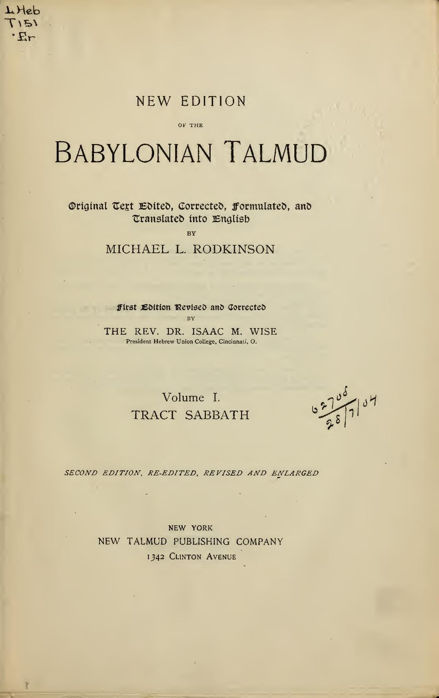
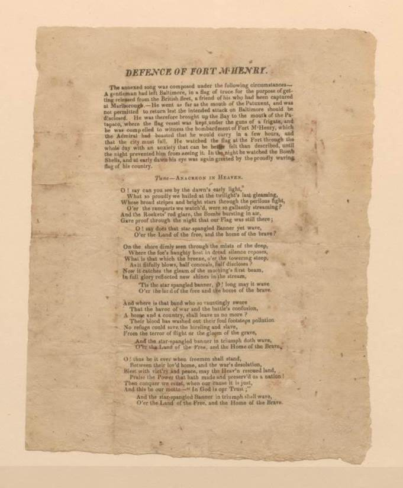
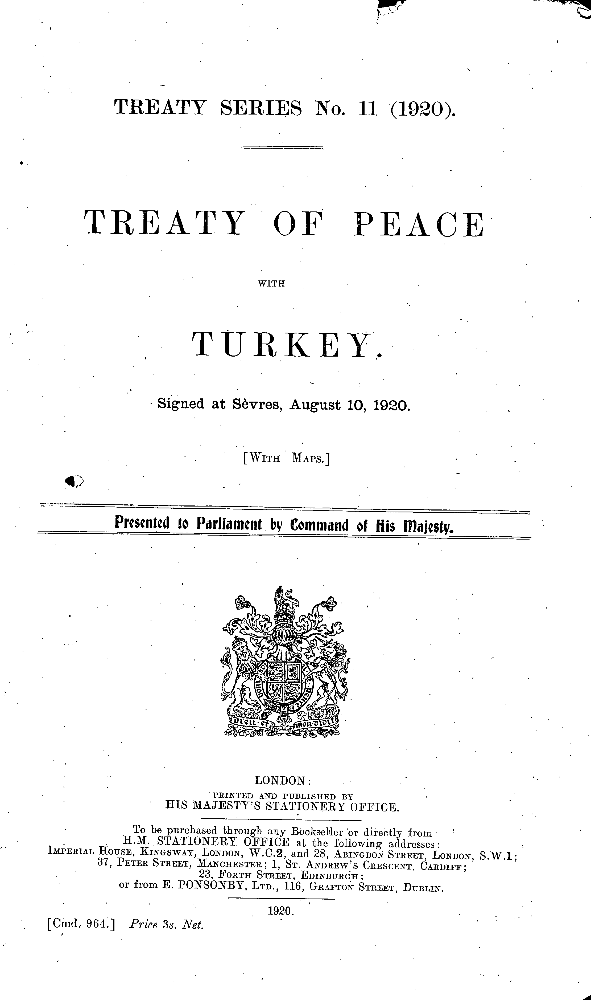

1:32:29 · 11 OPERE
La Nuova Normalità in Dar-Al-Harb.
Il filo del discorso
La conversazione fra Dr Divago e Paola Kafira prende il titolo da una categoria della tradizione giuridica islamica e la usa per interpretare cronache di violenza, antisemitismo e conflitto politico. L’ospite richiama Iran, Europa e Australia; Dr Divago collega questi episodi alla propria critica dei media e dell’industria culturale. Il registro è fortemente polemico. Le accuse di complicità, gli scenari di conquista coordinata e i giudizi generali sulle religioni rimangono posizioni degli interlocutori, senza attribuire responsabilità collettive ai fedeli o equiparare solidarietà ai palestinesi e sostegno a Hamas. I riferimenti di lettura rendono riconoscibili alcune direzioni del dialogo. Massa e potere di Canetti e Slavery, Terrorism and Islam di Hammond sono richiamati a sostegno della critica dei relatori; le percentuali demografiche del secondo non sono validate come spiegazioni causali del comportamento dei musulmani. Il passo talmudico su Sinai, un verso del Paradiso, Il mondo di ieri di Zweig e l’invito kantiano al coraggio del pensiero introducono invece elezione, universalismo etico, memoria storica e responsabilità personale. Grazie Islam! di Cardini è oggetto di una critica indiretta: Kafira dichiara di aver seguito un intervento online senza aver acquistato il libro. Alcuni racconti richiedono correzioni esplicite. L’attacco a Brown non fu commesso dallo studente palestinese cui lo attribuisce il dialogo: gli atti ufficiali identificano un’altra persona e documentano due studenti uccisi, non otto. Per l’incendio della Vondelkerk, un aggiornamento investigativo successivo alla conversazione non ha accertato la causa e non ha trovato prove delle accuse diffuse contro gruppi musulmani. Anche il presunto occultamento della bandiera ISIS a New Orleans non è dimostrato: l’FBI ne dichiarò pubblicamente il recupero. Inchieste, responsabilità individuali e interpretazioni religiose restano quindi su piani distinti. Nella seconda metà si discutono mobilitazione civile, timore di risposte autoritarie, controllo dello spazio pubblico e perdita di valori comuni. Le analogie con fascismo, conflitti medievali e guerre mondiali esprimono il giudizio dei due partecipanti e non una previsione necessaria. La chiusura collega fede, serenità e capacità di leggere criticamente: sono esperienze e convinzioni personali, senza diagnosi dei dissenzienti o affermazioni terapeutiche. Il richiamo alla traduzione dei testi e all’umiltà offre il punto finale per interrogare anche i limiti delle interpretazioni proposte.
I libri nel discorso

Massa e potere
Copertina: Adelphi · gli Adelphi · 2015
Copertina autentica controllata visivamente. Edizione di riferimento, non identificata come quella usata nel video.
Riferimento ricavato dalla trascrizione automatica.
Passaggio 10:30 ↗ · Fonti e libro ↗
Corano
Copertina: BUR Classici, edizione aggiornata
Edizione con introduzione, traduzione e commento di Alessandro Bausani, a cura di Layla Mustapha Ammar. Anno della ristampa non dedotto dalla copertina; nessuna edizione attribuita al video.
Riferimento ricavato dalla trascrizione automatica.
Passaggio 12:01 ↗ · Fonti e libro ↗Slavery, Terrorism and Islam: The Historical Roots and Contemporary Threat
Copertina: Xulon Press, terza edizione indicata nei cataloghi come 2010, ISBN 9781612154985; prima data dell’opera non fissata in questa voce
Immagine autentica dell’opera o del suo testo originale; esemplare ed edizione della registrazione non confermati.
Riferimento ricavato dalla trascrizione automatica.
Passaggio 15:28 ↗ · Fonti e libro ↗
Shabbat (trattato del Talmud babilonese)
Identificazione probabile
Copertina: Frontespizio di Tract Sabbath, volume I, traduzione e rielaborazione Michael L. Rodkinson, New Talmud Publishing Company, seconda edizione; copyright 1901 nella pagina successiva
Immagine autentica dell’opera o del suo testo originale; esemplare ed edizione della registrazione non confermati.
Riferimento ricavato dalla trascrizione automatica.
Passaggio 25:07 ↗ · Fonti e libro ↗
Divina Commedia
Copertina: Giunti Barbera · Passepartout, 2021 · edizione di riferimento
Riferimento ricavato dalla trascrizione automatica.
Passaggio 31:04 ↗ · Fonti e libro ↗
The Critical Qur’an. Explained from Key Islamic Commentaries and Contemporary Historical Research
Identificazione probabile
Copertina: Bombardier Books / Post Hill Press, hardcover ISBN 9781642939491, uscita catalogata 3 maggio 2022, 560 pagine; alcuni cataloghi riportano copyright 2021.
Immagine autentica dell’opera, controllata visivamente; l’edizione di riferimento non è attribuita al filmato.
Riferimento ricavato dalla trascrizione automatica.
Passaggio 35:07 ↗ · Fonti e libro ↗
The Star-Spangled Banner
Identificazione probabile
Foglio originale del testo, non spartito completo: Foglio originale del testo Defence of Fort M’Henry, Baltimore 1814, esemplare Library of Congress; non copertina moderna né spartito completo
Immagine autentica dell’opera o del suo testo originale; esemplare ed edizione della registrazione non confermati.
Riferimento ricavato dalla trascrizione automatica.
Passaggio 48:24 ↗ · Fonti e libro ↗
Il mondo di ieri. Ricordi di un europeo
Copertina: Newton Compton, edizione integrale, cura e traduzione di Silvia Montis,352 pagine; ISBN indicato nel catalogo 9788854148819.
Copertina autentica della scheda Newton Compton, con fascetta promozionale riferita al film Grand Budapest Hotel. La fascetta è parte dell’immagine editoriale, non un’opera aggiunta al repertorio. Nessuna tiratura specifica è attribuita al video.
Riferimento ricavato dalla trascrizione automatica.
Passaggio 51:58 ↗ · Fonti e libro ↗Grazie Islam! Quelle poche, piccole cose che l’Occidente moderno deve al mondo musulmano
Copertina: Paper First, 2025, ISBN 9791255430902
Immagine autentica dell’opera o del suo testo originale; esemplare ed edizione della registrazione non confermati.
Riferimento ricavato dalla trascrizione automatica.
Passaggio 59:00 ↗ · Fonti e libro ↗
Trattato di Sèvres (Treaty of Peace with Turkey)
Frontespizio ufficiale · Treaty Series 11 (1920), Cmd. 964: Frontespizio della pubblicazione ufficiale britannica Treaty Series No. 11(1920), Treaty of Peace with Turkey, Signed at Sèvres, August 10, 1920,[With Maps], London, HMSO, 1920, Cmd. 964. Facsimile della pagina 1 del PDF pubblico FCDO; non manoscritto firmato o copertina di un commentario.
Il titolo breve nel parlato identifica il trattato, senza indicare la specifica stampa HMSO.
A 4574.09–4581.77 s la trascrizione automatica riporta «nei trattati di Sevre»; segue un commento sui territori greci e sui mandati francesi e britannici. Il nome breve è pronunciato, ma data e intestazione ufficiale estesa sono riscontri bibliografici esterni.
Passaggio 1:16:14 ↗ · Fonti e libro ↗
Risposta alla domanda: che cos’è l’Illuminismo?
Identificazione probabile
Copertina della raccolta che comprende il saggio sull’Illuminismo: Firenze University Press · Sette scritti politici liberi · 2011 · a cura di Maria Chiara Pievatolo
Copertina del volume cartaceo FUP che comprende il saggio, riscontrato dal catalogo universitario. L’ISBN appartiene alla raccolta; il filmato non annuncia un’edizione e il titolo del saggio è un’identificazione probabile della citazione.
Riferimento ricavato dalla trascrizione automatica.
Passaggio 1:30:10 ↗ · Fonti e libro ↗